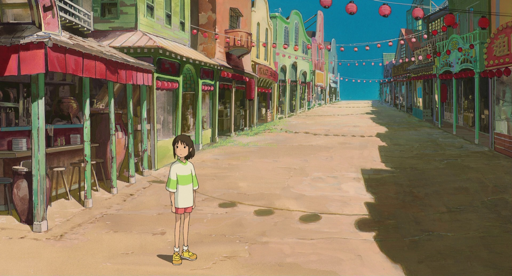
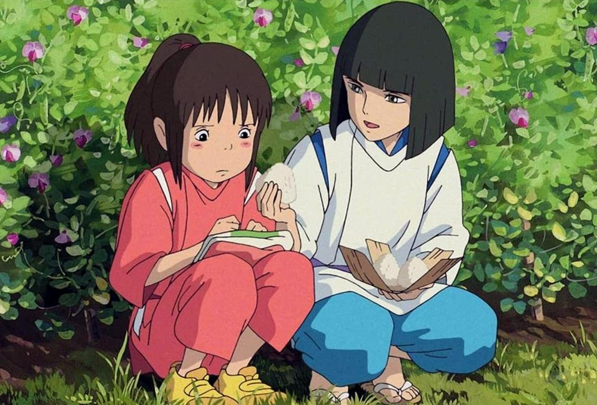
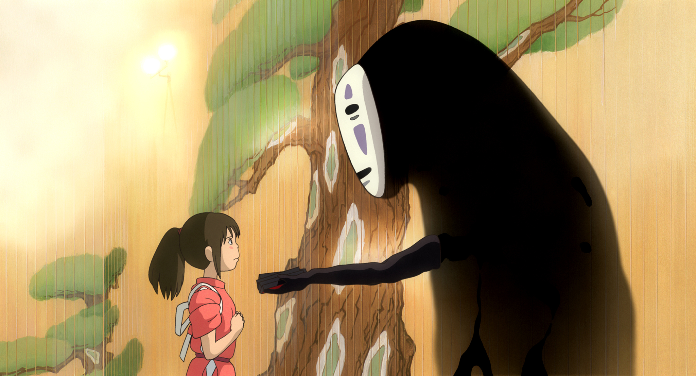
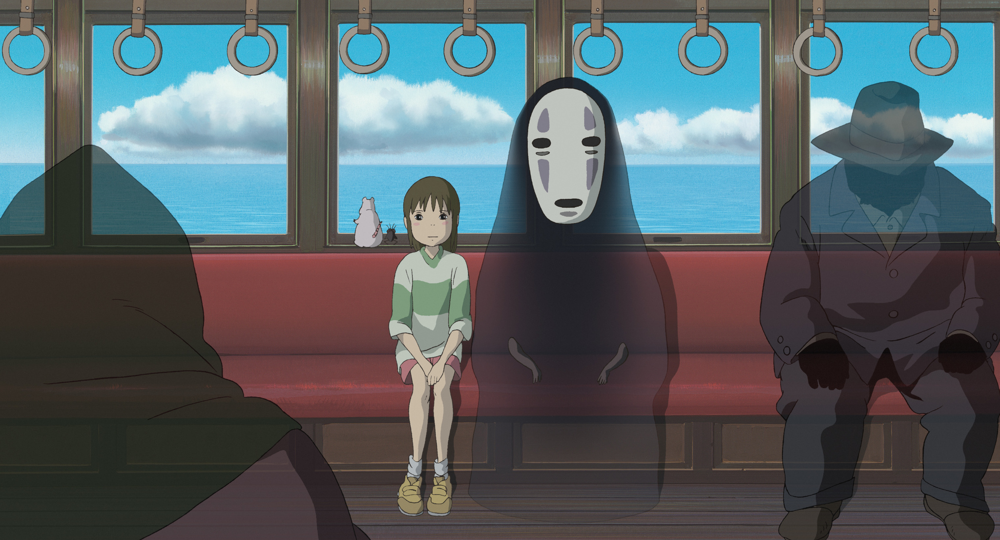
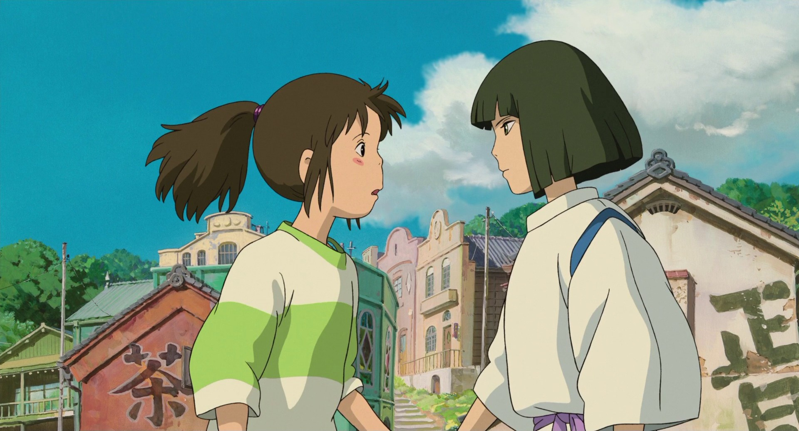

基本信息
《千与千寻》 （日语：千と千�い紊耠Lし）是一部由吉卜力工作室制作、宫崎骏担任导演和剧本，于2001年7月20日上映的日本动画电影。影片讲述一个小女孩误闯了神灵世界，并经历成长的故事。
此作品为宫崎骏带来事业上多项成就，其票房在日本国内超越了《泰坦尼克号》在日本上映的票房成绩，成为日本史上票房最高的电影。

基本信息《千与千寻》 （日语：千と千�い紊耠Lし）是一部由吉卜力工作室制作、宫崎骏担任导演和剧本，于2001年7月20日上映的日本动画电影。影片讲述一个小女孩误闯了神灵世界，并经历成长的故事。 此作品为宫崎骏带来事业上多项成就，其票房在日本国内超越了《泰坦尼克号》在日本上映的票房成绩，成为日本史上票房最高的电影。 |
|
剧情简介10岁的女孩荻野千寻跟着父母坐在车上，准备一同前往要搬入的新家。途中，千寻的父亲因开错方向，来到一条有着隧道入口的小径。在一时好奇心下，千寻的父母带着她前往隧道里头一探究竟。 通过隧道后，他们见到一个看不到任何人的小镇。当千寻的父母来到小镇里，发现到有间摆满食物的无人餐馆，便随意享用了里头的餐点。千寻不想跟父母一同乱拿食物，于是在小镇里四处闲晃，在一座桥对面看到一栋像是旅店的建筑。该建筑实际上是由一位名为“汤婆婆”的魔女所经营，提供各方神明泡澡歇憩，名叫“油屋”的澡堂。图为千寻走在空无一人的街道上。  当千寻走到桥上时，遇到一位名叫“白龙”的神秘少年。向她警告这里不是她应该进入的地方，就在此时城镇里各处突然冒出像是鬼魅般的形体。被眼前情况受到惊吓的千寻，跑向父母所待的餐馆要他们赶紧一同离开，但汤婆婆对千寻父母随意享用食物的行为感到愤怒，施法将两人变成了猪作为惩罚。 千寻发现父母变成猪而再度受到惊吓，开始漫无目的地乱跑。就在千寻不知该如何是好时，之前桥上的白龙出现在她面前，他愿意协助千寻渡过危机。图为白龙与千寻。  白龙暗中将千寻带到油屋，向她说，若要在这个世界存活下来，唯一方法是要向汤婆婆获得在油屋工作的资格。之后，千寻面临必须在油屋里接触不同形形色色人物、以及各种困难和危机，而她原先的心理也随着历程开始展开了不同变化。图为千寻在油屋工作时遇到“无脸男”的场景。  因为奉命窃取汤婆婆的孪生姐姐钱婆婆的魔女印章，白龙遭到钱婆婆的惩戒。为帮助受伤的白龙，千寻独自到钱婆婆那里送回了魔女印章。图为千寻与伙伴们坐在只有来程的列车上。  在白龙接她回去的路上，千寻想起来白龙的名字，并帮他找到了回现实世界的方法。故事的最后，千寻通过了汤婆婆的考验，和父母一起回到人间的世界。图为千寻与白龙临别的场景。  |